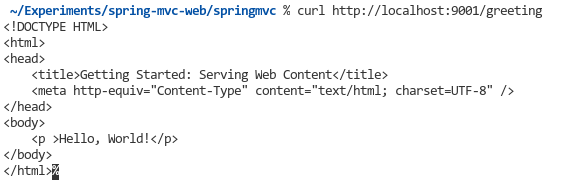
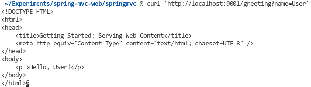
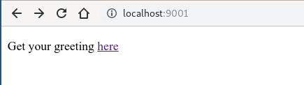

Spring MVC 框架是MVC设计模式的一种实现，被广泛应用在网站开发领域。
MVC 模式
MVC 模式属于软件工程中一种软件架构模式。该设计模式将软件系统分为三个基本部分：
模型（Model）、视图（View）和控制器（Controller）
One of the successful implementation is Java Spring MVC.
In Spring, if you want a class to be a controller you can use the annotation @RestController for this class.
And in this class, use annotation @RequestMapping to show this is an RESTful API function.
View 层实现：JSP
JSP是动态执行文件，由Tomcat生成java servlet执行文件。jsp中的内容被放到 _jspService() 方法体的 try...catch 代码块里执行1
2
3
4
5
6
7
8<li class="one"><a href="jsp/status.jsp">Home</a></li>
<div class="sectionTitle">Instance Info</div>
<table id='instanceInfo' class="stripeable">
<tr><th>Name</th><th>Value</th></tr>
<tr><td>ipAddr</td><td>192.168.1.104</td></tr><tr><td>status</td><td>UP</td></tr>
</table>
</div>
那么，当前 Eureka Server 的 InstanceInfo 是如何获取的呢？
status.jsp1
146 StatusInfo statusInfo = (new StatusUtil(serverContext)).getStatusInfo();
StatusUtil.java1
29 this.instanceInfo = server.getApplicationInfoManager().getInfo();
ApplicationInfoManager.java1
2
3
4
5
6
758 private static ApplicationInfoManager instance = new ApplicationInfoManager(null, null, null);
public ApplicationInfoManager(EurekaInstanceConfig config, InstanceInfo instanceInfo, OptionalArgs optionalArgs) {
this.instanceInfo = instanceInfo;
......
}
调试后验证了，这里的instanceInfo一开始初始化是null，之后在BootStrap.java中才正式通过Builder初始化
@Deprecated
DiscoveryManager.java1
2
3
4
5
6
7
8
9
10
11
12
13
14
15
16
17
18
19/**
* Initializes the <tt>Discovery Client</tt> with the given configuration.
*
* @param config
* the instance info configuration that will be used for
* registration with Eureka.
* @param eurekaConfig the eureka client configuration of the instance.
*/
public void initComponent(EurekaInstanceConfig config,
EurekaClientConfig eurekaConfig, AbstractDiscoveryClientOptionalArgs args) {
this.eurekaInstanceConfig = config;
this.eurekaClientConfig = eurekaConfig;
if (ApplicationInfoManager.getInstance().getInfo() == null) {
// Initialize application info
ApplicationInfoManager.getInstance().initComponent(config);
}
InstanceInfo info = ApplicationInfoManager.getInstance().getInfo();
......
}
ApplicationInfoManager.java1
2
3
4
5
6
7
8public void initComponent(EurekaInstanceConfig config) {
try {
this.config = config;
this.instanceInfo = new EurekaConfigBasedInstanceInfoProvider(config).get();
} catch (Throwable e) {
throw new RuntimeException("Failed to initialize ApplicationInfoManager", e);
}
}
EurekaBootStrap.java1
2
3
4
5161 EurekaInstanceConfig instanceConfig = isCloud(ConfigurationManager.getDeploymentContext())
? new CloudInstanceConfig()
: new MyDataCenterInstanceConfig(); // 调试发现用的是 MyDataCenterInstanceConfig()
165 applicationInfoManager = new ApplicationInfoManager(
instanceConfig, new EurekaConfigBasedInstanceInfoProvider(instanceConfig).get());
EurekaConfigBasedInstanceInfoProvider.java1
2
3
4
5
6
7
8
9
10
11
12
13
14
15
16
17
18builder.setNamespace(config.getNamespace())
.setInstanceId(instanceId)
.setAppName(config.getAppname())
.setAppGroupName(config.getAppGroupName())
.setDataCenterInfo(config.getDataCenterInfo())
.setIPAddr(config.getIpAddress())
.setHostName(defaultAddress)
.setPort(config.getNonSecurePort())
.enablePort(PortType.UNSECURE, config.isNonSecurePortEnabled())
.setSecurePort(config.getSecurePort())
.enablePort(PortType.SECURE, config.getSecurePortEnabled())
.setVIPAddress(config.getVirtualHostName())
.setSecureVIPAddress(config.getSecureVirtualHostName())
.setHomePageUrl(config.getHomePageUrlPath(), config.getHomePageUrl())
.setStatusPageUrl(config.getStatusPageUrlPath(), config.getStatusPageUrl())
.setASGName(config.getASGName())
.setHealthCheckUrls(config.getHealthCheckUrlPath(),
config.getHealthCheckUrl(), config.getSecureHealthCheckUrl());
于是我们在builder. 后面加入 .setAccountAddress(accountAddress)
在 InstanceInfo.java 中的 Builder 类中添加1
2
3
4public Builder setAccountAddress(String accountAddress) {
result.accountAddress = accountAddress;
return this;
}
继续调试发现 EurekaBootStrap.java 这段代码速度很慢1
2214 // Copy registry from neighboring eureka node
215 int registryCount = registry.syncUp();
First Example of Spring MVC
Our goals
I will build an application that has a static home page, and also will accept HTTP GET requests at:
http://localhost:9001/greeting
and respond with a web page displaying HTML. The body of the HTML contains a greeting:
"Hello, World!"
You can customize the greeting with an optional name parameter in the query string:
http://localhost:9001/greeting?name=User
The name parameter value overrides the default value of “World” and is reflected in the response:
"Hello, User!"
Prerequites
- About 15 minutes
- A favorite text editor or IDE
- JDK 1.8 or later
- Maven 3.2 +
Build with Maven
pom.xml1
2
3
4
5
6
7
8
9
10
11
12
13
14
15
16
17
18
19
20
21
22
23
24
25
26
27
28
29
30
31
32
33
34
35
36
37
38
39
40
41
42
43
44
45
46
47
48
49
50
51
52
53
54
<project xmlns="http://maven.apache.org/POM/4.0.0" xmlns:xsi="http://www.w3.org/2001/XMLSchema-instance"
xsi:schemaLocation="http://maven.apache.org/POM/4.0.0 https://maven.apache.org/xsd/maven-4.0.0.xsd">
<modelVersion>4.0.0</modelVersion>
<parent>
<groupId>org.springframework.boot</groupId>
<artifactId>spring-boot-starter-parent</artifactId>
<version>2.1.10.RELEASE</version>
<relativePath/> <!-- lookup parent from repository -->
</parent>
<groupId>com.example</groupId>
<artifactId>springmvc</artifactId>
<version>0.0.1-SNAPSHOT</version>
<name>demo</name>
<description>Demo project for Spring Boot</description>
<properties>
<java.version>1.8</java.version>
</properties>
<dependencies>
<dependency>
<groupId>org.springframework.boot</groupId>
<artifactId>spring-boot-starter-web</artifactId>
</dependency>
<dependency>
<groupId>org.springframework.boot</groupId>
<artifactId>spring-boot-starter-thymeleaf</artifactId>
</dependency>
<dependency>
<groupId>org.springframework.boot</groupId>
<artifactId>spring-boot-devtools</artifactId>
<scope>runtime</scope>
<optional>true</optional>
</dependency>
<dependency>
<groupId>org.springframework.boot</groupId>
<artifactId>spring-boot-starter-test</artifactId>
<scope>test</scope>
</dependency>
</dependencies>
<build>
<plugins>
<plugin>
<groupId>org.springframework.boot</groupId>
<artifactId>spring-boot-maven-plugin</artifactId>
</plugin>
</plugins>
</build>
</project>
Build with your IDE
Here I use VSCode - Java Delopment Pack extension.
Press Ctrl+Shift+P to call Spring Initializer.
Create a web controller
In Spring’s approach to building web sites, HTTP requests are handled by a controller. You can easily identify these requests by the @Controller annotation. In the following example, the GreetingController handles GET requests for “/greeting” by returning the name of a View, in this case, “demo”. A View is responsible for rendering the HTML content:
src/main/java/com/example/springmvc/DemoController.java1
2
3
4
5
6
7
8
9
10
11
12
13
14
15
16
17
18package com.example.springmvc;
import org.springframework.stereotype.Controller;
import org.springframework.ui.Model;
import org.springframework.web.bind.annotation.GetMapping;
import org.springframework.web.bind.annotation.RequestParam;
public class DemoController {
("/greeting")
public String greeting(@RequestParam(name="name", required=false, defaultValue="World") String name,
Model model) {
model.addAttribute("name", name);
return "demo";
}
}
This controller is concise and simple, but there’s plenty going on. Let’s break it down step by step.
The @GetMapping annotation ensures that HTTP GET requests to /greeting are mapped to the greeting() method.
@RequestParam binds the value of the query String parameter ‘name’ into the name parameter of the greeting() method. This query String parameter is not required; if it is absent in the request, the defaultValue of “World” is used. The value of the name parameter is added to a Model object, ultimately making it accessible to the view template.
The implementation of the method body relies on a ‘view technology’, in this case ‘Thymeleaf’, to perform server-side rendering of the HTML. Thymeleaf parses the demo.html template below and evaluates the th:text expression to render the value of the ${name} parameter that was set in the controller.
src/main/resources/templates/demo.html1
2
3
4
5
6
7
8
9
10
<html xmlns:th="http://www.thymeleaf.org">
<head>
<title>Getting Started: Serving Web Content</title>
<meta http-equiv="Content-Type" content="text/html; charset=UTF-8" />
</head>
<body>
<p th:text="'Hello, ' + ${name} + '!'" />
</body>
</html>
Developing web apps
A common feature of developing web apps is coding a change, restarting your app, and refreshing the browser to view the change. This entire process can eat up a lot of time. To speed up the cycle of things, Spring Boot comes with a handy module known as ‘spring-boot-devtools’:
- Enable hot swapping
- Switches template engines to disable caching
- Enable LiveReload to refresh browser automatically
- Other reasonable defaults based on development instead of production
Make the application executable
Although it is possible to package this service as a traditional WAR file for development to an external application server, the simpler approach demonstrated below creates a standalone application. You pakcage everything in a single, executable JAR file, driven by a good old Java main() method. Along the way, you use Spring’s support for embedding the Tomcat servlet container as the HTTP runtime, instead of deploying to an external instance.
src/main/java/com/example/springmvc/DemoApplication.java
1 | package com.example.springmvc; |
@SpringBootApplication is a convenience annotation that adds all of the following:
@Configuration: Tags the class as a source of bean definitions for the application context.@EnableAutoConfiguration: Tells Spring Boot to start adding beans based on classpath settings, other beans, and various property settings. For example, ifspring-webmvcis on the classpath, this anootation flags the application as a web application and activates key behaviors, such as setting up aDispatcherServlet.@ComponentScan: Tells Spring to look for other components, configurations, and services in thehellopackage, letting it find the controllers.
The main() method uses Spring Boot’s SpringApplication.run() method to launch an application. Did you notice that was not a single line of XML? There is no web.xml file, either. This web application is 100% pure Java and you did not have to deal with configuring any plumbing or infrastructure.
Build an executable JAR
You can run the application from the command line with Gradle or Maven. You can also build a single executable JAR file that contains all the neccessary dependencies, classes and resources and run that. Building an executable jar so makes it easy to ship, version, and deploy the service as an application throughout the development lifecycle, across different environments, and so forth.
If you use Maven, you can run the application by using ./mvnw spring-boot:run. Alternatively, you can build the JAR file with ./mvnw clean package and then run the JAR file, as follows:
java -jar target/springmvc-0.0.1-SNAPSHOT.jar
Test the App
Now that the web site is running, visit http://localhost:9001/greeting, where you see:

Provide a name query string parameter with http://localhost:9001/greeting?name=User. Notice how the message changes from “Hello, World!” to “Hello, User!”:

This change demonstrates that the @RequestParam arrangement in GreetingController is working as expected. The name parameter has been given a default value of “World”, but can always be explicitly overridden through the query string.
Add a Home Page
Static resources, like HTML or JavaScript or CSS, can easily be served from your Spring Boot application just by dropping them into the right place in the source code. By default Spring Boot serves static content from resources in the classpath at “/static” (or “/public”). The index.html resource is special because it is used as a “welcome page” if it exists, which means it will be served up as the root resource, i.e. at http://localhost:9001/ in our example. So create this file
src/main/resources/static/index.html1
2
3
4
5
6
7
8
9
10
<html>
<head>
<title>Getting Started: Serving Web Content</title>
<meta http-equiv="Content-Type" content="text/html; charset=UTF-8" />
</head>
<body>
<p>Get your greeting <a href="/greeting">here</a></p>
</body>
</html>
and when you restart the app you will see the HTML at http://localhost:9001/

Summary
Congradulations! You have just developed a web page using Spring.